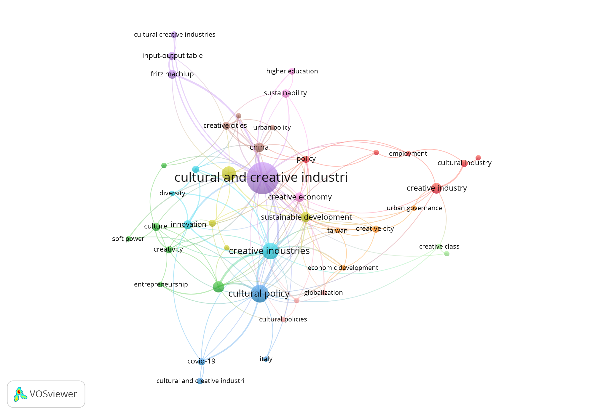
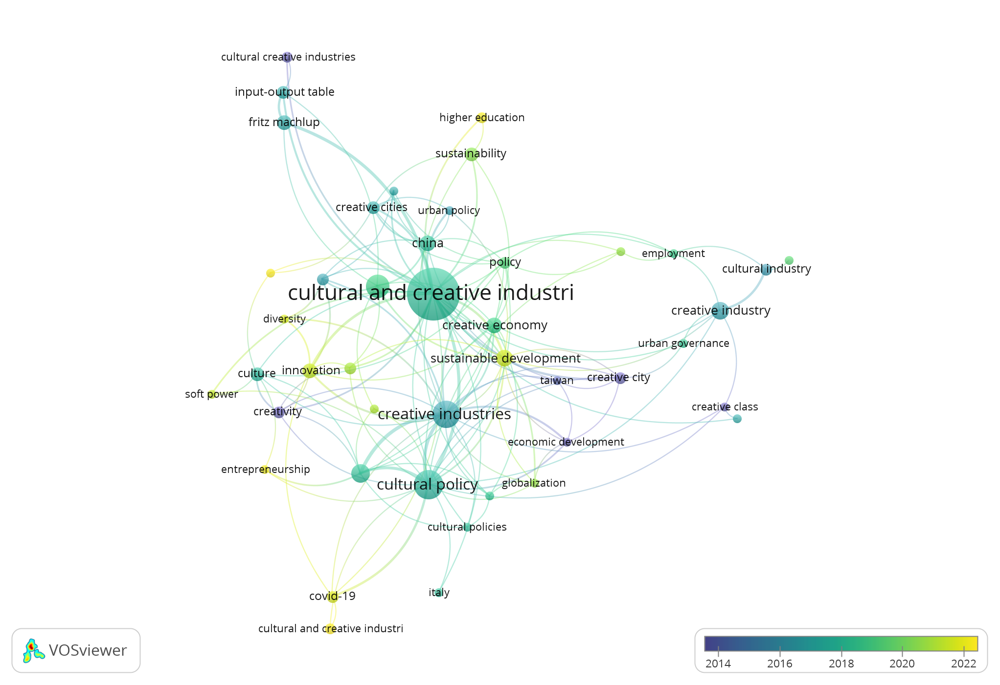

The influence of public policies on cultural and creative industries: an exploration of bibliometric maps
GESPYE GESTIÓN PÚBLICA Y EMPRESARIAL (e-ISSN: 3061-8630)
Año 1, Núm. 1 (ene-jun 2024) • Págs. 57-66 • DOI https://doi.org/10.32870/gespye.vi1.5
Recibido: 15/12/2023 • Aprobado: 04/02/2024 • Publicado: 30/04/2024
Tipo de contribución: Artículos
Resumen.
Las industrias culturales y creativas (ICC) como sujeto de estudio han ganado visibilidad en años recientes, lo anterior ha hecho que se incremente el interés de los investigadores por este sector. En este trabajo se busca identificar cómo se ha estudiado y hacia dónde van las líneas de investigación de las ICC en relación con las políticas públicas. Se realizó un análisis bibliométrico donde se utilizó como fuente de información la base de datos Scopus, se utilizaron para la búsqueda las siguientes palabras claves “cultural and creatives industries”, “cultural policy”, “public policy”, “policy” y “government” los resultados fueron procesados en el software VOSviewer. Se identificó que las líneas de investigación relacionadas con las ICC y las políticas públicas aún están en desarrollo, ya que se encontraron 11 diferentes clústers con muy pocos ítems cada uno de ellos.
Palabras clave:
Industrias culturales y creativas; Gobierno; Políticas culturales; Políticas públicas.
Abstract.
The cultural and creative industries (CCI) as a subject of study have gained visibility in recent years, which has increased the interest of researchers in this sector. This paper seeks to identify how CCIs have been studied and where the lines of research on CCIs are heading in relation to public policies. A bibliometric analysis was carried out using the Scopus database as a source of information where the following keywords “cultural and creative industries”, “cultural policy”, “public policy”, “policy” and “government” were used for the search; the results were processed in the VOSviewer software. It was identified that the lines of research related to CCIs and public policy are still in development, since 11 different clusters were found with very few items each.
Keywords:
Cultural and creatives industries; Government; Cultural policy; Public policy.
Desde inicios del siglo XXI, el concepto de industrias culturales y creativas (ICC) ha comenzado a escucharse más a nivel mundial dado que se ha presentado como parte de una estrategia de reactivación económica en los países postindustriales. Quién ha sido uno de los principales impulsores de este término es la UNESCO ya que se ha encargado de desarrollar a las ICC con la promoción del patrimonio cultural (Ma, 2022).
Ante lo anterior la UNESCO propone definir a las industrias culturales y creativas como aquellos “sectores de actividad que tienen como objeto principal la creatividad, la producción o reproducción, la promoción, la difusión y la comercialización de bienes, servicios y actividades de contenido cultural, artístico o patrimonial” (UNESCO 2010).
La cultura se ve reflejada a través de expresiones artísticas de una comunidad, estas pueden ser de manera tangible o intangible, donde estas expresiones tienen cabida en los que hoy se denomina industrias culturales y creativas que se ve representado en la música, en los colores y en diferentes formas que están al alcance de muchas personas y que determinan la identidad de una comunidad (UNESCO, 2010).
Las ICC se han convertido en un sector muy importante para los gobiernos ya que se ha señalado que estas industrias ayudan al desarrollo económico de un país o región, agregando que estas han ayudado a desarrollar la economía digital, así como han logrado promover la innovación, la inclusión y la sostenibilidad (Jia et al., 2024).
Las industrias culturales y creativas han tomado relevancia en los últimos años dado que se ha comenzado a visualizar como un sector económico que aporta al PIB de los países, aportando al PIB mundial el 3.1% y generando el 6.2% de todo el empleo, lo anterior ha logrado que estas industrias cada vez se integren más a las políticas públicas de los gobiernos, aunque se señala que la inversión pública en la cultura ha disminuido en la última década y que las prioridades de las políticas solo han sido para ciertos sectores de las ICC como el cine, las artes visuales, música y artes escénicas, prestando menos atención a las artes mediáticas y el diseño (UNESCO, 2022).
Las políticas públicas es la manera en que el estado ayuda a los problemas de orden público, en el pasado el desarrollo de estas solo les confería a los ámbitos estatales y federales de un gobierno, últimamente se ha incluido a actores no gubernamentales como asociaciones civiles, empresarios, profesionistas, académicos, entre otros (Ziccardi, 2008). En el mismo sentido una política pública refleja cómo un país participa en los contextos geopolíticos y como atiende recomendaciones de organismos internacionales (Bouquillion y Ithurbide, 2023).
Gracias a estas políticas las industrias creativas y culturales han logrado un crecimiento en estos últimos años, ya que estas han apoyado a este sector a través de subvenciones, reglamentos, normalización regional y nacional (Liu, 2021).
Dentro de las políticas públicas que atienden al sector cultural se encuentran las llamadas políticas culturales entendiéndose a éstas como las actividades que realiza un gobierno en favor de las artes, esto puede incluir aquellas con lucro o sin fines de lucro. En estas el gobierno plantea planes de acción donde se determinan las estrategias a seguir, algunas de estas acciones pueden ser la producción, difusión, comercialización y el consumo de los productos culturales (Betzler et al., 2020).
El estudio de las políticas culturales ha aumentado al igual que el interés por este sector, donde se ha demostrado que anteriormente los gobiernos se enfocaban a las ICC meramente por cuestiones de atender las necesidades culturales como un bien público, ofreciendo a los habitantes una oferta cultural y artística. Pero esto ha ido cambiando y ahora ven a las ICC como un elemento de desarrollo económico, turismo y empleo, por lo anterior se señala en los estudios que los objetivos de las políticas culturales irán en función de las preferencias del estado o nación (Betzler et al., 2020).
Por la importancia que ha tomado las industrias culturales y creativas en todo el mundo, los países han volteado más a ellas y con ello han comenzado a promover políticas públicas que las favorezcan para desarrollarse al punto que algunos países las han posicionado como un pilar de desarrollo industrial. A esto le agregamos que países emergentes han aumentado su consumo hacia estas industrias, esto haciendo que a nivel mundial se incremente el poder adquisitivo, así mismo las ICC ayudan no solo a las personas que lo consumen si no también al desarrollo de industrias emergentes ayudando a la competitividad de las economías (Liu y Chiu, 2017).
Por lo anterior se señala que las economías que serán más prósperas en el siglo XXI serán aquellas que utilicen la creatividad, por lo que es relevante que las políticas públicas de los gobiernos apoyen a la cultura pero para que esto suceda primero deben de aclarar algunos puntos acerca de las ICC ya que aún existen una diversidad de opiniones acerca de estas sin llegar a un consenso aún, por lo que en primera instancia tanto los que formulan las políticas públicas y académicos deben de aclarar cuál será la definición generalizada para la cultura y lo creativo, así como entender que la creatividad de las ICC es diferente a otro tipo de creatividad (Galloway y Dunlop, 2007).
Por otra parte, McGuigan (como se citó en Lysgård, 2016) señala que las políticas culturales pueden ser explicadas desde tres discursos ideológicos:
Estado o Gobierno: en este enfoque de la política cultural se enfoca a que la cultura sea algo para la sociedad, que sea un derecho.
Mercado comercial: en este segundo enfoque la política cultural se basa en que la cultura ya se relaciona con mercantilizarla y ya se basa en un aspecto más económico teniendo como consecuencia la comercialización de bienes y servicios.
Sociedad civil democrática: en este tercer enfoque la política cultural busca el punto medio entre el estado y el mercado.
Dado el auge que están teniendo las industrias culturales y creativas en los gobiernos de los países se debe de aprovechar este momento para crear entornos donde estas puedan desarrollarse para esto es necesario que se dé un ambiente jurídico, político y normativo que las respalde (UNESCO, 2022).
Algunos países con economías avanzadas y postindustriales han visto en las industrias culturales y creativas ese sector que les pueda dar una ventaja estratégica y de esa manera han trabajado en generar políticas que ayuden al desarrollo de este sector, por lo anterior una política debe de fomentar a las ICC y generar un instrumento que ayude a la difusión de estas industrias, así como que estas logren una sostenibilidad (UNESCO, 2010).
La base de datos utilizada para este trabajo fue Scopus, se determinó la siguiente estrategia de búsqueda: Article title, abstract and keywords (“cultural and creatives industries” AND “cultural policy” OR “public policy” OR “policy” OR "Government"), se eligió esta ecuación de búsqueda con la finalidad de que se buscaran las palabras claves anteriormente descritas en el el título del artículo, resumen y en las palabras claves, con esto se encontraron 333 documentos de los cuales fueron incluidos todo tipo de documentos, donde no se determinó ningún tipo de filtro en específico para que se arrojaran todos los resultados sin discriminación.
El procesamiento de los datos arrojados se realizó a través del software VOSviewer donde se subió la información en formato CVS descargado de Scopus y se procedió a realizar la construcción de mapas bibliométricos a partir de la co-ocurrencias de palabras claves del autor con la finalidad de crear redes de las palabras claves que se encuentran en los artículos y poder determinar las tendencias en las líneas de investigación en relación con las industrias culturales y creativas y las políticas.
Para este estudio se eligió tipo de análisis la co-ocurrencia de palabras claves tomando como unidad de análisis las palabras claves del autor donde se mostró un resultado de 972 palabras claves de ahí se determinó que estas por lo menos deberían de haber tenido mínimo 3 apariciones, de las cuales resultaron que 45 cumplían con esta condición.
Con el análisis bibliométrico realizado se obtuvieron resultados de los mapas que muestran las palabras claves usadas por los autores con mayor co-ocurrencia en estas podemos observar las palabras claves que más se estudian por los autores en relación con la temática propuesta en este trabajo, así como también se muestra un mapa que señala cómo se han ido cambiando el estudio de las palabras claves a través de los años. En la figura 1 se pueden visualizar todas las palabras claves que más repeticiones tuvieron en los documentos analizados, estas se agruparon en 11 clústeres que a continuación se explican:

Clúster 1: El clúster 1 señalado en el mapa bibliométrico es uno de los dos más grandes el cual está conformado por 6 ítems donde las palabras clave utilizadas por los autores con mayor fuerza de enlace son: industria creativa, productos culturales y creativos, industria cultural, empleo, política, Sudáfrica.
Clúster 2: En el segundo clúster más grande se agruparon 6 ítems los cuales son: COVID-19 pandemia, creatividad, industrias culturales, cultura, iniciativa empresarial y poder blando.
Clúster 3: En este clúster de palabras claves más utilizadas por los investigadores se pueden observar el estudio de variables como: COVID-19, industrias culturales y creativas (ccis), política cultural e Italia.
Clúster 4: El cuarto clúster que nos señala el mapa de red de palabras está conformado por cuatro palabras claves: industria cultural y creativa, consumo cultural, desarrollo regional y desarrollo sostenible.
Clúster 5: En el quinto clúster se pueden apreciar palabras claves como: industrias culturales y creativas, industrias culturales creativas, Fritz Machlup y tabla de entradas y salidas.
Clúster 6: El sexto clúster señalado en la figura 1 está conformado por las siguientes palabras claves: industrias creativas, diversidad, innovación y propiedad intelectual.
Clúster 7: En el clúster 7 se pueden apreciar las siguientes palabras claves: ciudad creativa, desarrollo económico, Taiwán y gobernanza urbana.
Clúster 8: El octavo clúster está conformado por las siguientes palabras claves de los autores: China, ciudades creativas, desarrollo y política urbanos.
Clúster 9: En el clúster 9 se puede apreciar que disminuyen el número de palabras claves donde solo lo conforman 3 palabras claves: economía creativa, educación superior y sostenibilidad.
Clúster 10: El décimo clúster tiene 3 ítems: políticas culturales, globalización y políticas públicas.
Clúster 11: En el último clúster y más pequeño solo está conformado con dos palabras claves: clase creativa y Hangzhou.

En la figura 2 se puede observar cómo a través de los años los investigadores han ido estudiando diferentes palabras claves, en los primeros años de estudio el mapa de superposición muestra los autores que enfocaban sus investigaciones a las industrias culturales y creativas y el desarrollo económico que estas podrían representar específicamente relacionándolo con Taiwán, para después del 2016 al 2019 aproximadamente las investigaciones pasaron a enfocarse a las políticas públicas, a las políticas culturales, el desarrollo urbano y se comenzaban a nombrar a las ciudades como ciudades creativas, en estos estudios aparecen China e Italia como países relevantes en los artículos y por último del 2020 a la fecha los estudios se relacionaron con las industrias culturales y creativas y el COVID-19, innovación, desarrollo sostenible, emprendimiento, el nivel de estudios y Sudáfrica apareció en las investigaciones.
En la tabla 1 se muestran las 15 palabras claves con mayor número de co-ocurrencias arrojadas por el Vosviewer, para poder obtener este resultado se definieron diferentes criterios, el primero de ellos es que se contarán las palabras claves usadas por los autores de los artículos, así como que seleccionará aquellas que tuvieran como un mínimo de repetición de palabras claves ≥3 donde de 972 palabras claves se encontró 45 coincidan más de tres veces. De lo anterior se puede señalar que las palabras claves con mayor co-ocurrencia y fuerza de enlace fueron principalmente aquellas que tiene que ver con las palabras claves de búsqueda de los artículos en Scopus que fueron industrias creativas y culturales, por lo que para esta tabla se eliminaron las palabras relacionadas a las ICC y solo se señalaron aquellas que no tuvieran relación con estas, donde se puede visualizar como palabras claves principales las políticas culturales, innovación, desarrollo sostenible, China, Fritz Machlup, política, ciudades creativas, propiedad intelectual, desarrollo económico, entre otras.
Con lo anterior se puede resumir que las tendencias en las palabras claves más usadas en las investigaciones relacionadas con las industrias culturales y creativas y la política son aquellas que hablen de las políticas culturales y de otro tipo de políticas que ayuden al desarrollo en diferentes ámbitos como económico, sostenible, regional, urbano entre otros.
Tabla 1.
Listado de palabras claves por importancia de aparición e intensidad de enlace de la búsqueda de industrias creativas y culturales y políticas.
| Palabras claves | Co-ocurrencias | Fuerza total del enlace |
Enlaces | Cluster |
|---|---|---|---|---|
| Política cultural | 30 | 44 | 21 | 3 |
| Innovación | 8 | 16 | 8 | 6 |
| Desarrollo sostenible | 10 | 16 | 11 | 4 |
| China | 9 | 12 | 8 | 8 |
| Fritz Machlup | 8 | 12 | 3 | 5 |
| Política | 5 | 12 | 11 | 1 |
| Ciudades creativas | 6 | 11 | 7 | 8 |
| Propiedad intelectual | 5 | 11 | 7 | 6 |
| Desarrollo económico | 3 | 9 | 6 | 7 |
| Tabla de entradas y salidas | 6 | 9 | 4 | 5 |
| Covid-19 | 5 | 8 | 5 | 3 |
| Globalización | 3 | 7 | 6 | 10 |
| Desarrollo regional | 5 | 7 | 6 | 4 |
| Desarrollo urbano | 3 | 7 | 5 | 8 |
| Diversidad | 3 | 6 | 3 | 6 |
Nota. elaboración propia a partir de VOSviewer.
Las industrias culturales y creativas son industrias que han ido tomando relevancia hasta hace poco y que países postindustriales las han puesto en la mira del resto del mundo. Estas han demostrado que son capaces de generar desarrollo en muchos sentidos, pero uno de los que más les interesa a los gobiernos es el económico.
Por lo anterior los gobiernos se han propuesto generar los entornos idóneos para que las ICC puedan crecer y seguir desarrollándose, generando políticas culturales y marco jurídicos que las hagan visibles y las reconozcan. Pero aún está en sus inicios este tema ya apenas se ha logrado que se reconozcan a las ICC como un sector que puede generar ingresos y desarrollo en un país, el siguiente paso es brindarles todos los elementos necesarios para que se vuelva competitiva y se mantenga como un pilar de los países y es ahí donde entra el desarrollo de políticas públicas en torno a ellas.
Los clústeres descritos en el apartado de resultados dieron un panorama de cómo se agrupan los temas de estudio relacionados con las industrias culturales y creativas y su relación con las políticas públicas, lo que arrojó que aún hay varias líneas de investigación que se están estudiando, pareciera por lo que arroja el VOSviewer referente a los artículos obtenidos de Scopus que este tema apenas está en formación ya que hay muchos clústeres y contienen muy pocos ítems.
Para resumir los 11 clústeres antes descritos se reagruparán en cuatro grandes clústeres de acuerdo con su número de ítems quedando de la siguiente manera:
Línea de investigación de los clústeres 1 y 2: en estos clústeres se encuentran las líneas de investigación más consolidadas ya cuentan con 6 ítems cada una de ellas, estas son las que relacionan a las industrias culturales y creativas con la política, el empleo, la iniciativa empresarial y en él como un país puede influir en otro a través de la cultura lo llamado también poder blando.
Línea de investigación de los clústeres 3, 4, 5, 6, 7 y 8: en esta línea de investigación es donde se agrupa el mayor número de clústeres con 4 ítems cada uno, estos relacionan a las industrias culturales y creativas con el desarrollo de un país desde diferentes enfoques apoyado de las políticas, como también se relaciona a este sector con la innovación y la propiedad intelectual y se comienza a incluir el término de ciudades creativas, así como también toman relevancia regiones del mundo como China y Taiwán.
Línea de investigación de los clústeres 9 y 10: esta línea de investigación es menos estudiada que las anteriores, en esta las palabras claves más estudiada por los investigadores van más hacia una economía creativa y no tanto hacia las industrias culturales y creativas, en esta línea se enfoca más hacia las políticas públicas, la educación superior y se comienza a tomar el tema de la sostenibilidad.
Línea de investigación del clúster 11: esta última línea de investigación apenas se está creando ya que solo tiene dos palabras claves en ella y una es muy específica, se comienza a estudiar a la clase creativa y la relación con una región de China llamada Hangzhou.
Con todo lo anterior se puede concluir que las líneas de investigación de las industrias culturales y creativas en relación a las políticas aún están en formación, pero también se puede observar que cada vez se le reconoce más a este sector por sus múltiples beneficios en el desarrollo en un país; por otra parte, se puede visualizar que tal vez el concepto de ICC vaya a evolucionar a solo industrias creativas y quizá con esta evolución se pueda llegar a un consenso acerca de su definición, se debe de resaltar que regiones de Asía y Europa son las que más aparecen en las investigaciones de las palabras claves con mayor co-ocurrencia.
Betzler, D., Loots, E., Prokůpek, M., Marques, L., & Grafenauer, P. (2020). COVID-19 and the arts and cultural sectors: Investigating countries’ contextual factors and early policy measures. International Journal of Cultural Policy, 1-19. https://doi.org/10.1080/10286632.2020.1842383https://doi.org/10.1080/13527258.2022.2042717
Galloway, S., y Dunlop, S. (2007). A critique of definitions of the cultural and creative industries in public policy. International Journal of Cultural Policy, 13(1), 17-31. https://doi.org/10.1080/10286630701201657
Jia, Q., Li, D., Wang, Z., Zhang, T., y Li, S. (2024). Cultural and Creative Industries of Local Autonomy: Cultural Innovation and Cultural Upgrading. Lex localis - Journal of Local Self-Government, 22(01), 125-151. https://doi.org/10.52152/22.1.125-151 (2024)
Liu, Y.-Y., y Chiu, Y.-H. (2017). Evaluation of the Policy of the Creative Industry for Urban Development. Sustainability, 9(6), 1009. https://doi.org/10.3390/su9061009
Liu, Z. (2021). The Impact of Government Policy on Macro Dynamic Innovation of the Creative Industries: Studies of the UK’s and China’s Animation Sectors. Journal of Open Innovation: Technology, Market, and Complexity, 7(3), 168. https://doi.org/10.3390/joitmc7030168
Lysgård, H. K. (2016). The ‘actually existing’ cultural policy and culture-led strategies of rural places and small towns. Journal of Rural Studies, 44, 1-11. https://doi.org/10.1016/j.jrurstud.2015.12.014
Ma, H. (2022). The Missing Intangible Cultural Heritage in Shanghai Cultural and Creative Industries. International Journal of Heritage Studies, 28(5), 597-608. https://doi.org/10.1080/13527258.2022.2042717
UNESCO. (2010). Políticas para la creatividad: Guía para el desarrollo de las industrias culturales y creativas. https://unesdoc.unesco.org/ark:/48223/pf0000220384
UNESCO (2022). Re|pensar las políticas para la creatividad: plantear la cultura como un bien público global. https://unesdoc.unesco.org/ark:/48223/pf0000380479
Licencia: Esta obra está protegida bajo una Licencia Creative Commons Atribución-CompartirIgual 4.0 Internacional.